4장. 비균일 양자화와 PTQ 오차 제어
PTQ 오차 제어 가지치기 지도

여러 오차 제어 수단을 무엇을 조정하는지에 따라 묶었다. 대표 입력·범위, 반올림·출력 재구성, 공유 단위·분포는 서로 조합하는 관점이며 배타적인 알고리즘 계열이나 고정 절차가 아니다. 표현 방식 자체의 분류는 3장 기존 지도와 이 장 4.2–4.4절을 함께 읽는다.
원본 범위: PDF p.39–54. 강의 해설은 슬라이드의 논리를 풀어 쓴 내용이고, 교육용 보충은 정의·예제·연결 설명이다. 정정·주의는 원문의 단순화를 보완한다. 숫자 실험 결과는 해당 연구의 설정에 대한 결과로 해석한다.
4.1 학습 목표와 선수 개념
이 장의 질문은 “같은 4비트라도 왜 정확도가 다른가?”다. 대표값을 배치하는 방법, 양자화 범위·반올림을 정하는 방법, scale을 공유하는 단위가 모두 오차를 바꾼다. 이 장을 마치면 이러한 선택을 구별하고, 정확도 저하에 대해 단순히 비트 수를 올리는 것 외의 대안을 제시할 수 있어야 한다.
3장의 q=clip(round(r/S)+Z), r̃=S(q−Z)를 알고 있어야 한다. S는 scale, Z는 zero point, q는 저장 코드, r̃는 복원값이다. 1장의 행렬곱·활성값 개념도 사용한다. 학습 자체가 필요한 QAT의 역전파는 5장에서 설명한다.
4.2 NF4: 정규분포에 맞춘 16개 대표값 — p.39

**NormalFloat 4-bit(NF4)**는 4비트 코드를 16개의 비균일한 대표값에 대응시키는 형식이다. **Codebook(코드북)**은 코드와 대표값의 대응표이고, **index(인덱스)**는 해당 대표값을 가리키는 번호다. 같은 4비트라도 정수값 자체를 일정 간격으로 해석하는 INT4와 의미가 다르다.
p.39 읽는 포인트: 표에서 −1과 +1 사이의 간격이 균일하지 않고, 0 부근에 대표값이 더 촘촘하다. 표의 4비트 문자열은 실수 자체가 아니라 대표값을 찾는 index다. 예를 들어 코드 7은 0, 코드 10은 약 0.24715에 대응한다.
**Quantile(분위수)**는 분포의 누적확률을 기준으로 나눈 위치다. 정규분포에서 확률이 많이 모인 영역에 표현값을 더 배정하려는 것이 핵심이다. 실제 저장에서는 보통 블록별 scale로 값을 정규화한 뒤 codebook index를 고른다. 복원은 r̃ = a×C[q]로 이해할 수 있다. 여기서 a>0은 블록 scale, C는 NF4 codebook, q는 0~15 index다. a와 r̃는 원래 가중치와 같은 단위이고 C의 정규화 대표값은 무차원이다.
교육용 보충 — 수치 예: a=2이고 정규화 입력이 0.25라면 대표값 0.2471467을 택할 수 있다. 원래 값은 0.5, 복원값은 약 0.4942934다. 실제 nearest-code 선택·블록 정규화 방식에 맞춰 오차를 확인해야 한다.
정정·주의: “information-theoretically optimal”은 정규분포 가정을 둔 NF4 설계 맥락에서의 주장이다. 어떤 분포·모델·평가지표에도 항상 최적이라는 뜻은 아니다. 블록 정규화와 유한한 표에서는 “각 구간의 실제 원소 수가 언제나 정확히 같다”도 보장하지 않는다. QLoRA 원 논문
4.3 다른 비균일 표현: INQ·binary code·학습된 codebook — p.40–43
4.3.1 INQ: 한 번에 바꾸지 않고 조금씩 양자화
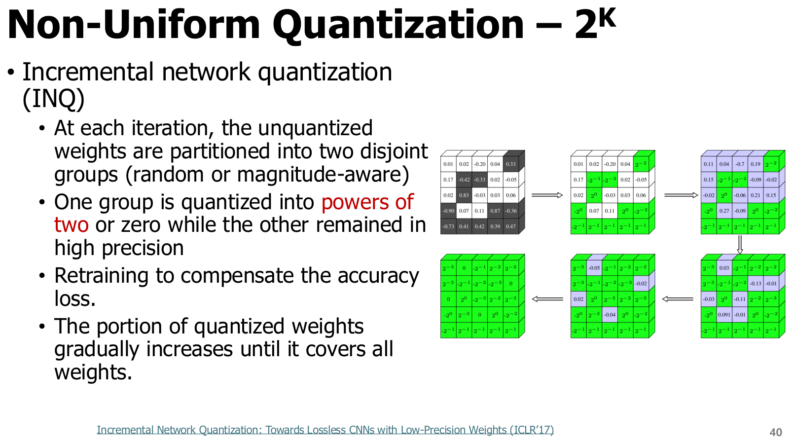
**Incremental Network Quantization(INQ, 점진적 네트워크 양자화)**는 일부 가중치를 먼저 0 또는 부호를 갖는 2^k 값으로 양자화해 고정하고, 남은 고정밀 가중치를 재학습해 오차를 보상하는 방법이다. k는 허용된 정수 지수다.
p.40 읽는 포인트: 그림의 양자화된 부분과 아직 고정밀인 부분이 반복마다 달라진다. 전체 절차는 가중치 분할 → 한 그룹 양자화·고정 → 다른 그룹 재학습 → 고정 그룹 확대다. 마지막에는 목표 가중치 전체를 양자화한다. INQ 원 논문
교육용 보충: 2의 거듭제곱과의 곱셈을 shift로 대체할 여지가 있다. 다만 누적, scale, 메모리 배치와 지원 커널까지 포함해 효율성을 판단한다. INQ는 재학습을 포함하는 역사적 비균일 양자화 예로, 단순한 “무학습 PTQ”로 분류하지 않는다.
4.3.2 Binary-code 기반: 이진 벡터를 조합해 실수 벡터를 근사

강의의 식은 다음과 같다.
r∈R^n은 n개 원소의 실수 벡터, b_i는 각 원소를 부호 한 비트로 표현하는 길이 n의 이진 벡터다. α_i는 그 벡터에 곱하는 실수 계수이고 m은 조합하는 이진 벡터 수다. α_i는 r와 같은 단위를 갖는다.
p.41 읽는 포인트: 여러 α_i와 ±1 조합으로 대표값이 만들어지므로 값 간격이 학습에 따라 달라질 수 있다. 모든 원소가 단순히 −1 또는 +1로만 바뀌는 binary network와 구별한다. LQ-Nets는 이런 계수와 표현을 학습하는 예이고, BiQGEMM은 관련 표현을 lookup table 기반 행렬곱과 연결한 예다.
검산 예: m=2, α_1=1, α_2=0.3이면 한 원소의 조합은 −1.3, −0.7, 0.7, 1.3 네 값이다. 두 이진 부호로 표현하지만 간격은 0.6,1.4,0.6으로 비균일하다. 원소당 m개의 부호 비트 외에 α 계수의 저장량도 포함해야 한다.
4.3.3 Learned codebook: 가중치를 공유 대표값으로 묶기
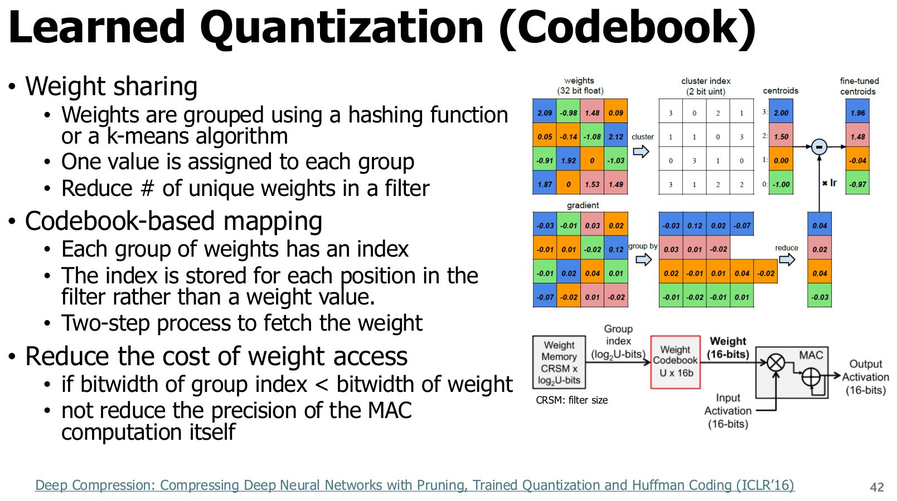
**Weight sharing(가중치 공유)**은 비슷한 가중치가 하나의 대표값을 함께 가리키게 하는 방법이다. **K-means(케이평균 군집화)**는 값을 K개 그룹으로 묶고 각 그룹의 중심값을 찾는 알고리즘이다. 가중치마다 원래 실수를 저장하는 대신 작은 index를 저장하고, 대표값은 codebook에 한 번 저장한다.
p.42 읽는 포인트: 왼쪽의 여러 실수 가중치가 몇 가지 색으로 묶이고, 각 위치에는 색에 해당하는 index가 남는다. 실행 시 index 읽기 → codebook 조회 → 대표값 사용으로 진행한다. codebook 값이 FP16·FP32라면 저장을 줄이더라도 MAC 자체가 같은 비트 수의 정수 연산으로 바뀐 것은 아니다.
교육용 보충 — 저장량 검산: 1,024개 FP32 가중치를 16개 FP32 대표값으로 표현하면 index는 1,024×4=4,096비트, codebook은 16×32=512비트로 총 576바이트다. 원래 4,096바이트 대비 약 7.11배 압축이다. 이 예는 index packing·헤더 비용이 없고 별도 scale이 없다는 가정이다.
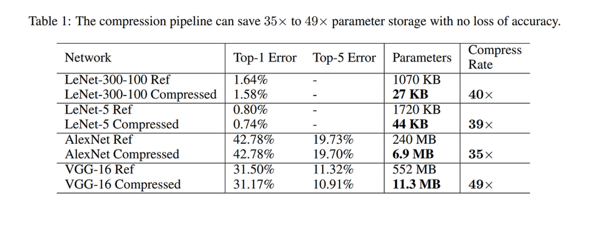
p.43 읽는 포인트: Top-1 Error, Top-5 Error는 낮을수록 좋고, Compress Rate는 저장 압축률이다. 예를 들어 표의 AlexNet은 약 240 MB에서 6.9 MB로 작아진다. 이 표는 pruning + trained quantization + Huffman coding을 결합한 Deep Compression 전체 파이프라인의 결과다. codebook 하나만 사용해 모든 모델에서 35~49배 줄어든다는 뜻이 아니다.
평가 용어 보충: Top-1 error는 모델의 가장 높은 점수 예측이 정답이 아닌 비율, Top-5 error는 상위 다섯 예측 안에 정답이 없는 비율이다. 같은 평가 자료에서 accuracy(정확도)와 error(오류율)는 반대 방향으로 읽는다. 압축률은 여기서는 원본 저장량을 압축 후 저장량으로 나눈 배수이며, 정확도나 실행 속도 배수가 아니다.
**Huffman coding(허프먼 부호화)**은 자주 나오는 기호에 짧은 코드를 부여하는 무손실 부호화다. 양자화가 이미 잃은 정밀도를 되돌리는 기법은 아니며, 압축 저장과 실행 중 랜덤 접근 비용은 따로 생각해야 한다.
4.4 벡터 양자화: 여러 값을 함께 표현 — p.44–45
4.4.1 Scalar quantization과 vector quantization
**Scalar quantization(스칼라 양자화)**은 한 원소마다 대표값을 고른다. **Vector quantization(VQ, 벡터 양자화)**은 d개 원소를 하나의 벡터로 묶고, d차원 대표 벡터를 고른다. VQ는 원소 사이의 관계까지 이용할 수 있지만, codebook 탐색·저장·복호화 비용이 생긴다. “여러 원소가 scale만 공유하는 group quantization”과 “여러 원소를 하나의 index로 표현하는 VQ”는 다른 선택이다.
4.4.2 QuIP#: Hadamard 변환과 격자 codebook
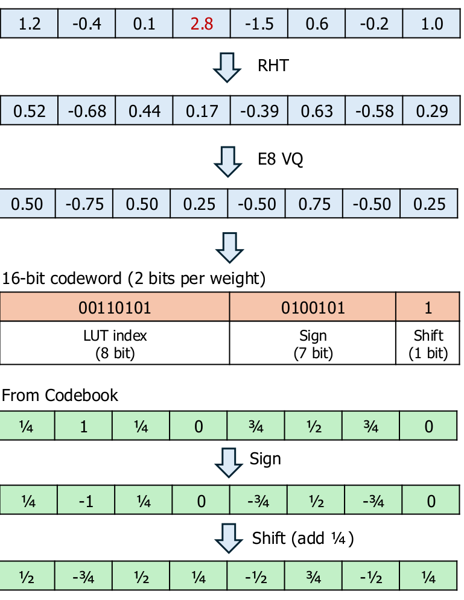
**Randomized Hadamard Transform(RHT)**는 정규화된 Hadamard 행렬과 무작위 ±1 부호를 사용해 좌표를 섞는 변환이다. Orthogonal(직교) 변환은 전치가 역행렬이며 벡터의 길이를 보존한다. **Isotropic(등방성)**은 특정 방향에 값이 집중되지 않는 성질을 뜻한다.
p.44 읽는 포인트: 먼저 한 좌표에 집중된 큰 값을 여러 좌표에 분산해 양자화에 유리하게 만든다. 그다음 8개 값을 E8 격자 기반 대표 벡터로 함께 표현한다. **Lattice(격자)**는 규칙적인 구조를 갖는 다차원 점 집합이고, E8은 8차원 구조다. 변환이 모든 입력을 정확한 정규분포로 만드는 것은 아니다.
원본의 W̃=UWV^T에서 W는 m×n 가중치, U는 m×m, V는 n×n 직교 행렬이다. 입력·출력에도 대응 변환을 적용해야 원래 연산과 일치한다. 정규화되지 않은 Hadamard 행렬을 그대로 쓰면 크기까지 달라지므로 정규화가 중요하다.
정정·주의 — 256개와 65,536개는 모순이 아니다: 그림은 8비트 base lookup index, 7비트 sign 정보, 1비트 shift 정보로 8차원 codeword를 표현한다. 기본 lookup 표는 256개 항목을 저장하지만, 구조적 변환을 조합한 전체 코드 공간은 16비트다. 따라서 payload는 16/8=2비트/가중치이며 “8개 값 전체를 8비트만으로 나타낸다”로 읽지 않는다. codebook·scale 비용은 별도다. QuIP# 원 논문, E8P codebook
4.4.3 AQLM: 여러 codebook의 합으로 복원

**Additive Quantization(가산 양자화)**은 한 벡터를 여러 codebook에서 뽑은 벡터의 합으로 근사한다. AQLM은 가중치와 입력 특성을 고려해 codebook을 학습하는 접근이다. AQLM 원 논문
w_g는 g번째 그룹의 d차원 가중치 벡터, M은 codebook 수, C_j는 j번째 codebook, k_j는 그 안에서 선택한 index다. 대표 벡터와 w_g는 같은 단위를 갖는다.
p.45 검산: 강의 예는 d=8, M=2이고 각 codebook이 256개 항목을 가진다. index 두 개는 8+8=16비트, 8개 가중치에 대해 payload 2비트/가중치다. 그림의 첫 좌표는 0.60+0.20=0.80, 둘째는 −0.40−0.10=−0.50으로 복원된다. 그림의 정확한 일치는 작동 방식을 설명하는 예이며 임의의 입력이 항상 오차 없이 복원되는 것은 아니다.
| 비교축 | QuIP# 강의 예 | AQLM 강의 예 |
|---|---|---|
| 주된 표현 | 변환 후 격자 구조 기반 VQ | 학습된 여러 codebook의 가산 VQ |
| 8개 가중치의 코드 | base index + sign + shift, 총 16비트 | 8비트 index 두 개, 총 16비트 |
| 기본 대표값 구조 | E8 격자 대칭 구조 활용 | 데이터에 맞게 학습 |
| 복원 | base 조회와 구조적 변환 | codebook 벡터들을 더함 |
| 추가 비용 | codebook·scale·변환·커널 | 여러 codebook 저장·조회·커널 |
4.5 PTQ와 calibration: 무엇을 조정하는가 — p.46–48
4.5.1 PTQ의 의미와 데이터 역할
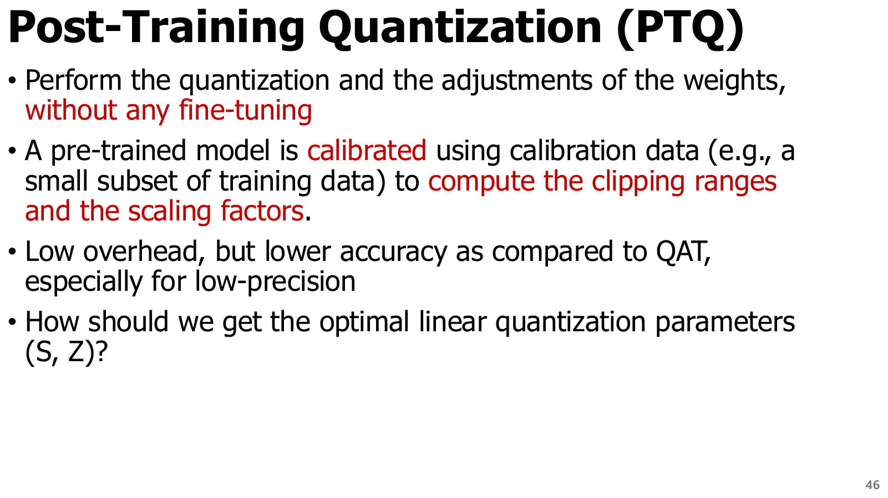
**Post-Training Quantization(PTQ, 학습 후 양자화)**은 이미 학습된 모델을 출발점으로 양자화하는 접근이다. **Calibration(보정)**은 소량의 대표 입력을 통과시켜 활성값 분포·범위·민감도 등을 파악하고 양자화 파라미터를 정하는 과정이다. calibration data는 배포 입력을 대표해야 하며, 성능 평가용 데이터와 구분하는 것이 좋다.
p.46 읽는 포인트: PTQ는 모델을 처음부터 다시 학습하지 않는다는 점에서 비용이 낮다. 하지만 단순히 min/max를 구하고 끝나는 RTN뿐 아니라 rounding 선택, 레이어 출력 복원, scale 탐색 등도 포함한다.
정정·주의: 원본의 “without any fine-tuning”은 기초적인 PTQ와 QAT를 대비하는 설명이다. 실제 문헌에서는 PTQ로 분류된 방법도 calibration 기반 최적화, 일부 파라미터 보정, 제한된 fine-tuning을 포함할 수 있다. 예컨대 QuIP#은 자신을 PTQ 방법이라 소개하면서 fidelity를 개선하는 fine-tuning을 포함한다. PTQ라는 이름만으로 어떤 변수가 얼마나 갱신되는지 판단하지 말고 방법의 실제 절차를 확인한다.
4.5.2 Range mapping과 clipping의 절충
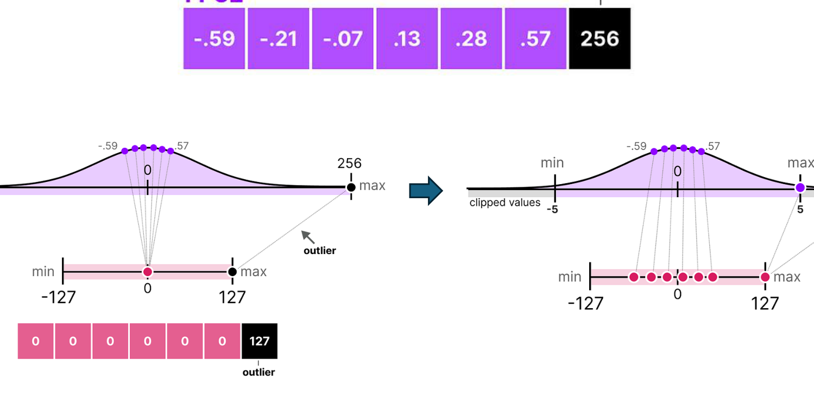
p.47 읽는 포인트: 대부분 값은 작지만 256처럼 큰 값이 하나 있을 때, 전체 min/max를 그대로 쓰면 작은 값들이 같은 코드로 뭉칠 수 있다. **Clipping range(클리핑 범위)**는 양자화에 사용할 실수 구간이고, 밖의 값은 끝점에 포화시킨다.
검산 예: 절댓값 최댓값이 256인 대칭 INT8에서 S=256/127≈2.016이다. 이때 r=0.5는 q=0, 복원값 0이 된다. 범위를 −8~8로 줄이면 S=8/127≈0.06299, r=0.5는 q=8, 복원값 약 0.50394가 된다. 대신 r=256은 8로 잘려 큰 오차가 생긴다. 즉 보통 값의 rounding 오차 감소와 outlier의 clipping 오차 증가 사이의 절충이다.
| 범위 결정법 | 정의 | 장점 | 주의 |
|---|---|---|---|
| Min/max | 관측 최솟값·최댓값 사용 | 단순하며 관측 극단값을 보존 | 소수 outlier에 민감 |
| Percentile, 백분위 | 일정 비율의 극단값을 제외한 범위 | 보통 값의 정밀도 개선 가능 | 드물지만 중요한 값도 잘릴 수 있음 |
| MSE 최소화 | 원본·복원 오차 제곱의 평균을 줄이는 범위 탐색 | 오차를 수치 기준으로 비교 | 작은 MSE가 항상 최종 정확도 향상을 뜻하지 않음 |
| 분포 기준 최적화 | 히스토그램 등의 차이를 줄임 | 분포 형태를 고려 | 목적함수·히스토그램 설정에 영향 받음 |
**MSE(Mean Squared Error, 평균제곱오차)**는 N개 값에 대해 Σ(r_i−r̃_i)^2/N이다. 여기서 N은 값 개수이고, MSE의 단위는 r 단위의 제곱이다. 표의 기준은 출발점이며 calibration과 분리된 평가에서 최종 지표를 확인해야 한다.
분포 기준의 용어 보충: Histogram(히스토그램)은 값 구간별 출현 빈도를 센 표다. Entropy(엔트로피)는 분포의 불확실성을 요약하는 양이다. 일부 보정법에서 사용하는 KL divergence(쿨백–라이블러 발산)는 두 확률분포의 차이를 나타내며, 엔트로피 자체를 단순히 최대화하는 것과 다르다. 어떤 분포를 비교하는지와 실제 목적함수를 확인해야 한다.
4.5.3 Static과 dynamic은 scale을 정하는 시점의 차이
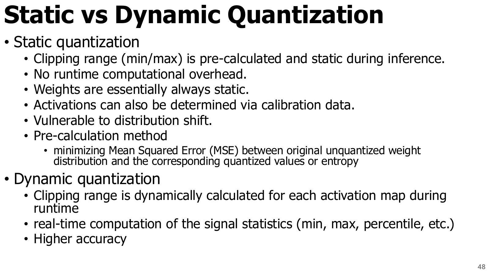
p.48 읽는 포인트: 가중치는 추론 중 보통 고정되어 범위를 미리 정할 수 있다. 입력에 따라 달라지는 활성값은 미리 정한 범위를 쓰거나, 실행 중 통계를 구해 범위를 바꿀 수 있다.
| 비교축 | Static, 정적 | Dynamic, 동적 |
|---|---|---|
| scale·범위 계산 | 추론 전에 결정 | 입력·토큰 등 실행 단위마다 계산 |
| 필요한 데이터 | 활성값의 경우 대표 calibration 데이터가 흔히 필요 | 실행 입력 자체에서 통계를 구할 수 있음 |
| 장점 | 런타임 통계 계산을 줄임 | 입력별 범위 차이에 적응 가능 |
| 비용·한계 | distribution shift에 취약할 수 있음 | min/max·scale 계산과 동기화 비용 가능 |
| 보장하지 않는 것 | 양자화·복원 비용이 0이라는 뜻 아님 | 정확도가 항상 더 높다는 뜻 아님 |
**Distribution shift(분포 변화)**는 보정 때와 배포 때 입력 분포가 달라지는 현상이다. 한국어 짧은 질의로만 calibration한 모델을 긴 코드 입력에 쓰면 통계가 맞지 않을 수 있다. dynamic도 outlier·비트 부족·커널 비효율까지 자동으로 해결하지는 않는다.
4.6 Rounding과 출력 오차: RTN·AdaRound·BRECQ·OBQ — p.49–50
4.6.1 가장 가까운 값이 항상 가장 좋은 모델은 아니다
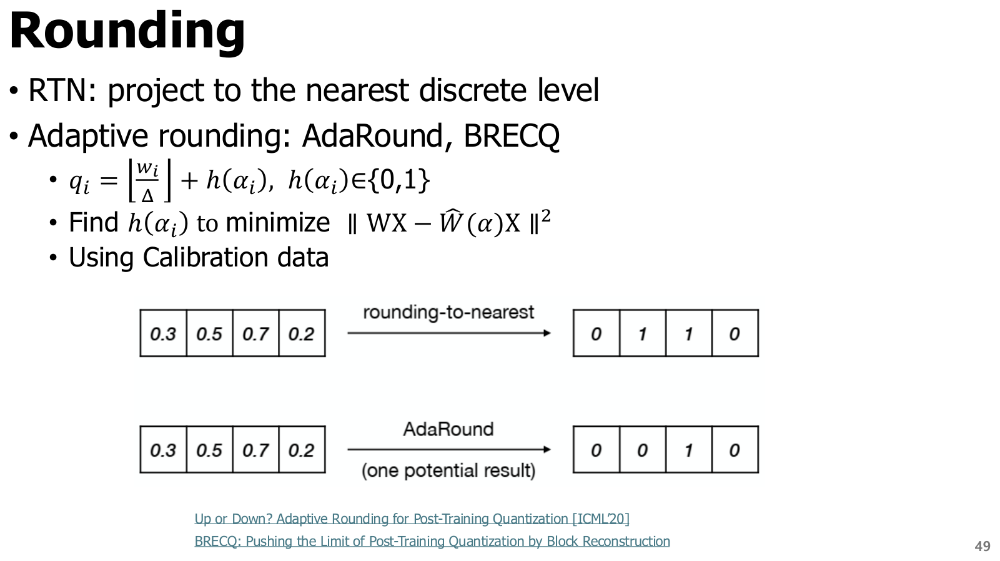
**Round-To-Nearest(RTN, 최근접 반올림)**은 각 가중치가 가장 가까운 대표값으로 가도록 독립적으로 반올림한다. **Adaptive rounding(적응적 반올림)**은 입력을 통과시켰을 때의 출력 오차를 고려해 일부 값을 위·아래 중 어느 쪽으로 보낼지 선택한다.
p.49 읽는 포인트: 개별 가중치의 오차가 작아도 여러 오차가 출력에서 더해져 커질 수 있다. 따라서 ||W−Ŵ||만 작게 만드는 것과 ||WX−ŴX||를 작게 만드는 것은 다른 문제다. 여기서 Ŵ는 양자화·복원된 가중치, X는 calibration 입력이다.
검산 예: 두 가중치 [0.6,0.6]와 입력 [1,1], 대표값 {0,1}을 생각한다. RTN은 [1,1]이므로 원래 출력 1.2가 2가 되어 오차 +0.8이다. 하나는 1, 하나는 0으로 두면 출력 1, 오차 −0.2다. 두 번째 선택은 한 가중치의 개별 오차가 더 크더라도 이 입력의 출력 오차는 작다. 다른 입력에서도 더 좋은지는 별도로 확인해야 한다.
| 방법 | 조정·활용하는 것 | 핵심 목적 | 주의 |
|---|---|---|---|
| RTN | 각 원소의 최근접 코드 | 개별 값 오차 감소 | 입력 민감도를 직접 고려하지 않음 |
| AdaRound | 반올림 방향을 calibration 기반 최적화 | 레이어 출력 차이 감소 | 보정 데이터 대표성 필요 |
| BRECQ | 여러 연산을 포함한 block 복원 | 레이어 사이 의존성까지 일부 고려 | block 경계·최적화 비용 존재 |
| OBQ | 2차 곡률과 다른 가중치 보정 | 한 가중치 양자화가 만드는 출력 손실 증가 감소 | 행렬 연산·수치 안정성 비용 |
AdaRound와 BRECQ는 “PTQ에 최적화가 없어야 한다”는 오해를 바로잡는 예다. 둘 다 학습된 모델의 출력에 대한 복원을 활용한다. AdaRound 원 논문, BRECQ 원 논문
4.6.2 OBQ: 오차의 크기뿐 아니라 민감도를 본다

**Optimal Brain Quantization(OBQ)**는 가중치 하나를 양자화할 때 출력 오차가 얼마나 증가하는지 2차 정보로 추정하고, 남은 가중치를 조정해 이를 보상하는 방법이다. **Hessian(헤시안)**은 손실의 2차 미분으로, 방향별 곡률·민감도를 나타내는 행렬이다. **Second-order(2차)**는 이런 곡률 정보를 사용한다는 뜻이다.
교육용 보충 — GPTQ를 위한 연결: 한 출력 행 w와 calibration 입력 X∈R^(k×n)에 대해 L=||wX−ŵX||²를 생각한다. k는 입력 차원, n은 calibration 표본·토큰 수다. δw=ŵ−w라고 두면 L=δw(XX^T)δw^T, Hessian은 H=2XX^T다. 평균 손실을 쓰면 상수 배율이 달라진다. ||·||²는 원소 제곱합이며 단위는 출력 단위의 제곱이다.
p.50 읽는 포인트: 순서는 곡률을 이용해 영향이 작은 가중치 선택 → 그 가중치 양자화 → 다른 가중치의 오차 보상 → 반복이다. 6장의 GPTQ는 이 발상을 대규모 모델에서 효율적으로 실행하도록 바꾼 방법으로 연결된다. “Optimal”이라는 이름이 모든 비트 배정·모델 최종 정확도의 전역 최적해를 보장하는 것은 아니다. Optimal Brain Compression 원 논문
4.7 Granularity: scale을 누구와 공유할 것인가 — p.51–52
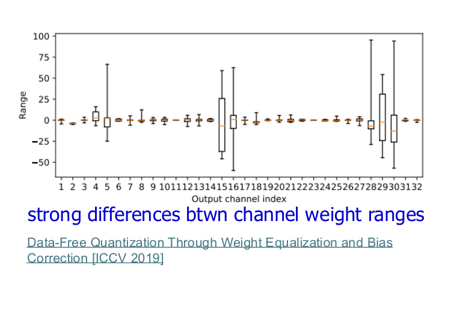
**Granularity(양자화 세분 단위)**는 같은 scale·zero point를 공유하는 범위다. 서로 다른 범위를 가진 값을 큰 그룹으로 묶으면 작은 값이 큰 값의 scale에 끌려가 정밀도를 잃는다. 작은 그룹은 정밀도를 높일 수 있지만 metadata와 커널 처리가 늘어난다.
p.51 읽는 포인트: 채널마다 최대 크기가 매우 다를 수 있다는 점을 본다. 큰 모델과 작은 모델에 대한 슬라이드 설명은 관찰된 경향이며 “per-tensor는 큰 모델에서 항상 충분하다”는 법칙은 아니다.

p.52 읽는 포인트: 같은 행렬곱에서도 활성값은 token마다, 가중치는 출력 channel마다 다른 scale을 쓸 수 있다. 이 그림은 행벡터 입력 Y=XW 관례를 쓸 수 있으므로, 3장의 Y=WX와 대조할 때는 입력·출력 의미와 축을 먼저 맞춘다. 행·열이라는 이름만 외우지 않는다.
| 단위 | 정의 | 대표적 사용 | 절충 |
|---|---|---|---|
| Per-tensor | 전체 텐서가 하나의 파라미터 집합 공유 | 단순한 실행 경로 | metadata 적음, 서로 다른 분포를 한 범위로 묶음 |
| Per-output-channel | 출력 채널별로 공유 | CNN·선형층 가중치 | 채널 간 범위 차이 완화, 채널별 scale 필요 |
| Per-group | 정해진 개수의 연속 원소 등이 공유 | 저비트 LLM 가중치 | 작은 그룹일수록 보통 오차 감소·metadata 증가 |
| Per-token | 각 토큰의 feature 벡터가 공유 | LLM 활성값 | 토큰별 크기 차이에 대응, 동적 계산과 결합 가능 |
| Per-head | attention head별로 공유 | KV cache 등 | head별 분포 차이에 대응, 전용 kernel 제약 가능 |
정정·주의: per-token과 dynamic은 서로 다른 축이다. 전자는 공유 범위, 후자는 계산 시점이다. 또한 group의 축과 크기는 구현마다 다를 수 있다. per-channel도 입력 채널인지 출력 채널인지 반드시 명시한다.
검산 예: 두 출력 채널의 가중치 범위가 각각 −0.1~0.1, −10~10이라고 하자. 대칭 INT8을 per-tensor로 쓰면 S=10/127≈0.07874다. 첫 채널의 0.02는 0으로 반올림된다. 첫 채널만의 S=0.1/127≈0.0007874를 쓰면 q=25, 복원값 약 0.019685다. 같은 8비트라도 공유 단위가 오차를 바꾼다.
교육용 보충 — metadata: 대칭 group quantization에서 그룹 크기 g, 원소 b비트, 그룹 scale s비트라면, padding 없는 평균 저장량은 b+s/g비트/원소다. 예를 들어 4비트 원소에 FP16 scale을 32개마다 붙이면 4+16/32=4.5비트/원소다. 비대칭의 zero point·min 값이 추가되면 더 커진다.
4.8 Weight equalization: 양자화 전에 범위를 바꾸기 — p.53
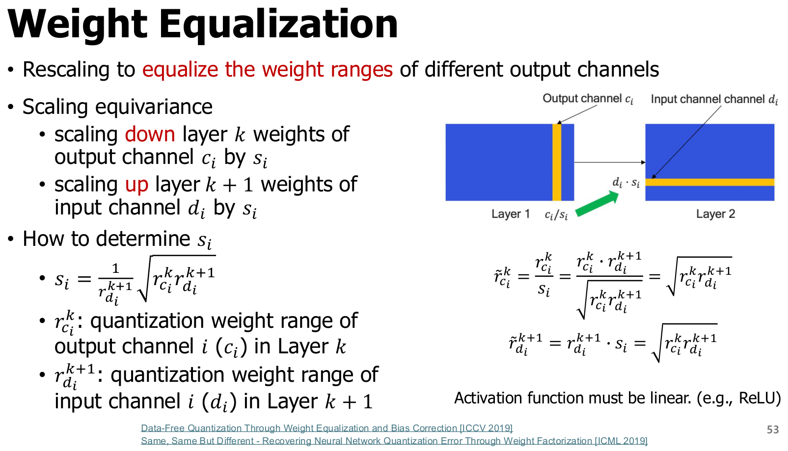
**Weight equalization(가중치 범위 균등화)**은 연속된 두 레이어 사이에서 한 채널의 첫 레이어 가중치를 줄이고 다음 레이어의 대응 가중치를 늘려, 양자화 전 모델의 함수를 유지하면서 범위를 비슷하게 만드는 방법이다. **Scaling equivariance(스케일 등변성)**은 스케일을 바꿨을 때 함수 출력이 정해진 방식으로 함께 변하는 성질이다.
정정·주의: 원문은 “Activation function must be linear (e.g., ReLU)”라고 적었지만, ReLU는 선형 함수가 아니다. 필요한 핵심 성질은 양의 s에 대해 ReLU(x/s)=ReLU(x)/s가 되는 **positive homogeneity(양의 동차성)**다. 음의 scale이나 sigmoid·GELU 같은 함수에 같은 논리를 그대로 적용하면 안 된다. Weight Equalization 원 논문
교육용 보충 — 한 채널 식: bias를 생략한 y=W₂ ReLU(W₁x)에서 채널 i의 W₁ 출력 가중치를 s_i>0으로 나누고, W₂의 대응 입력 가중치를 s_i배 하면 함수는 유지된다. bias가 있으면 첫 레이어의 해당 bias도 함께 나눠야 한다. residual·분기 연결이 있으면 연결 전체와 호환되는 변환인지 확인해야 한다.
첫 레이어의 해당 채널 범위를 r₁>0, 다음 레이어 범위를 r₂>0이라고 두면 변환 후 범위는 r₁/s, r₂×s다. 둘을 같게 만들려면
s는 무차원 scale이다. r₁·r₂는 각 가중치 범위의 크기이며, 이 식은 비교 가능한 범위 정의를 사용하는 강의의 equalization 설정이다. 범위가 0이면 별도 처리가 필요하다.
p.53 검산: r₁=16, r₂=1이면 s=4다. 첫 범위는 16/4=4, 다음 범위는 1×4=4가 된다. 양자화 전 함수는 유지하면서 한쪽만 지나치게 넓은 상태를 완화한다. 양자화 후는 반올림 오차 때문에 완전히 같은 함수라고 보장할 수 없다.
**Bias correction(편향 보정)**은 양자화로 출력 평균이 한쪽으로 치우치는 오차를 보상하는 기법이다. equalization이 분포 범위를 조절한다면 bias correction은 평균적인 이동을 줄이는 역할이다. residual 구조·정규화와의 결합은 구현별로 검토해야 한다.
4.9 PTQ의 한계와 QAT로 넘어가는 기준 — p.54
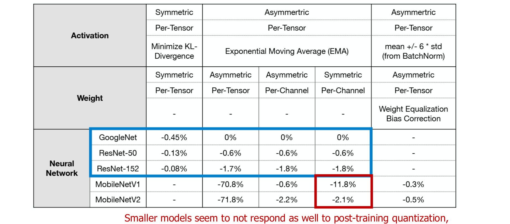
p.54 읽는 포인트: 각 열은 활성값·가중치의 대칭성, granularity, 범위 결정법이 함께 다른 설정이다. 큰 모델의 행과 MobileNet 계열의 행에서 정확도 감소 양상이 다르다. 특히 per-tensor에서 per-channel로 바꾸거나 equalization·bias correction을 적용했을 때 손실이 회복되는지를 본다.
정정·주의: 표의 열들이 여러 설정을 동시에 바꾸므로 한 수치 차이를 단일 원인의 효과로 확정하지 않는다. 그림은 기법 선택이 중요하다는 교육 자료이지, 현재 모든 모델에서 같은 순위를 보장하는 벤치마크가 아니다. 표의 감소율을 최종 정확도 그 자체로 읽어서도 안 된다. CNN 양자화 원 논문·백서
다음은 교육용 검토 순서다. 해당 절차는 통합 양자화 흐름 Canvas와 미리보기로도 확인한다.
- 실행 제약 확인: 목표 CPU·GPU·NPU가 지원하는 비트 수·scale·축·연산을 확인한다.
- 기준선 측정: 고정밀 모델의 실제 정확도·지연시간·peak memory를 기록한다.
- 가벼운 PTQ부터 비교: 대표 calibration 데이터, 합리적인 clipping, per-channel/group scale을 사용한다.
- 오차 원인 구분: outlier, 잘못된 calibration 범위, 민감한 레이어, Q/DQ 비용을 분리한다.
- 복구 수단 선택: 범위·공유 단위·rounding·equalization·혼합 정밀도 등을 검토한다.
- 목표를 못 맞추면 QAT 검토: 사용 가능한 학습 데이터·시간·메모리를 따져 양자화를 고려한 학습으로 정확도를 회복한다.
- 별도 평가와 실제 장치 검증: calibration 입력에서 잘 맞는 것과 배포 입력에서 잘 동작하는 것을 구별한다.
4.10 장 요약과 흔한 오해
같은 비트 수에서도 정확도는 대표값의 모양, clipping 범위, rounding 방향, 공유 단위, 사전 변환에 따라 달라진다. PTQ는 재학습 부담이 작은 출발점이지만, 실제 알고리즘은 calibration·출력 복원·선택적 최적화를 포함할 수 있다. 최종 선택은 정확도·저장량·실행 커널을 함께 비교한다.
| 흔한 오해 | 바르게 이해하기 |
|---|---|
| NF4가 모든 분포에 최적이다 | 정규분포 가정에 맞춘 대표값 설계다 |
| VQ는 group quantization의 다른 이름이다 | VQ는 여러 원소를 공동 대표 벡터로 표현하고, group quant는 scale 공유 단위다 |
| PTQ면 어떠한 최적화도 하지 않는다 | calibration 기반 rounding·복원·보정 등을 포함할 수 있다 |
| Dynamic이 static보다 항상 정확하다 | 입력·비트 수·통계 방식·배포 분포에 따라 다르다 |
| 더 작은 group은 무조건 유리하다 | 오차 감소와 metadata·커널 비용 증가를 함께 본다 |
| ReLU는 선형 함수라 equalization이 된다 | 양의 동차성 때문에 양수 scale을 옮길 수 있다 |
| Deep Compression의 압축률은 양자화만의 효과다 | pruning·양자화·부호화가 결합된 전체 결과다 |
4.11 복습 질문과 해설
- NF4의 4비트 index와 INT4 정수 코드는 무엇이 다른가?
- NF4는 codebook의 비균일 대표값을 조회한다. INT4 선형 양자화는 scale·zero point로 일정 간격의 실수를 복원한다.
- INQ가 양자화와 재학습을 번갈아 수행하는 이유는 무엇인가?
- 먼저 양자화한 가중치가 만든 오차를 남은 고정밀 가중치가 보상하도록 하기 위해서다.
- 8개 가중치를 8비트 index 두 개로 나타내면 전체 모델이 정확히 2비트/가중치인가?
- index payload는 2비트/가중치지만 codebook·scale·다른 고정밀 텐서·padding까지 더해야 전체 저장량이 된다.
- calibration 데이터를 늘리기만 하면 정확도 문제가 해결되는가?
- 아니다. 대표성이 없는 데이터는 많아도 배포 분포를 잘 설명하지 못한다. 형식·비트 부족과 민감한 레이어 문제도 따로 남는다.
- RTN이 각 값의 오차를 줄이는데 출력 오차가 더 클 수 있는 이유는 무엇인가?
- 입력이 각 오차를 서로 다른 크기로 증폭하고, 여러 오차가 같은 방향으로 합쳐질 수 있기 때문이다.
- r₁=9, r₂=1인 두 범위를 equalization하면 s와 새 범위는?
s=√9=3, 새 범위는 각각9/3=3,1×3=3이다. 양의 동차성·bias·연결 조건을 만족해야 함수가 유지된다.
- per-token dynamic quantization에서 per-token과 dynamic은 각각 무엇을 정하는가?
- per-token은 파라미터 공유 범위, dynamic은 scale을 실행 중 결정한다는 시점이다.
다음 5장에서는 정확도 복구를 학습 과정에 포함하는 QAT, rounding을 통과시키기 위한 STE, 학습 중 fake quantization과 실제 정수 추론의 차이를 다룬다. 6장의 GPTQ는 이 장의 OBQ·출력 복원과, SmoothQuant·AWQ는 채널 scaling과 연결된다.
4.12 집필 자체 점검
- p.39–54 16개 페이지의 이미지와 읽는 포인트를 포함했다.
- NF4·INQ·binary code·learned codebook·QuIP#·AQLM을 빠짐없이 설명했다.
- code payload와 metadata, 저장 압축과 연산 정밀도를 구별했다.
- PTQ·calibration·clipping·정적/동적·반올림·2차 복원 개념을 연결했다.
- tensor/channel/group/token/head granularity와 계산 시점을 구별했다.
- ReLU의 양의 동차성, equalization bias·분기 조건을 보완했다.
- 수치 예제 검산, 비교표, 요약·오해·복습 정답과 다음 장 연결을 포함했다.
기준 본문은 기존 Markdown입니다. 수식·도표는 온라인 렌더러를 사용하며, 원문과 도표 원문으로도 확인할 수 있습니다.